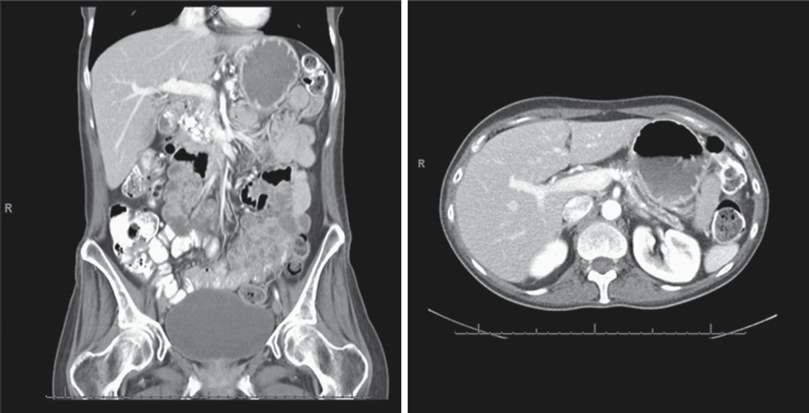
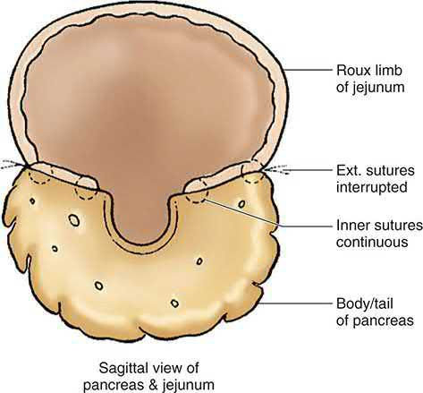
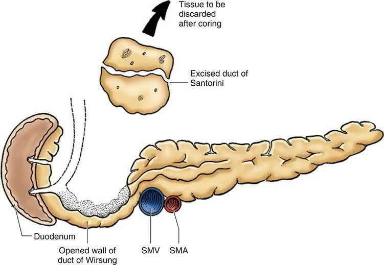
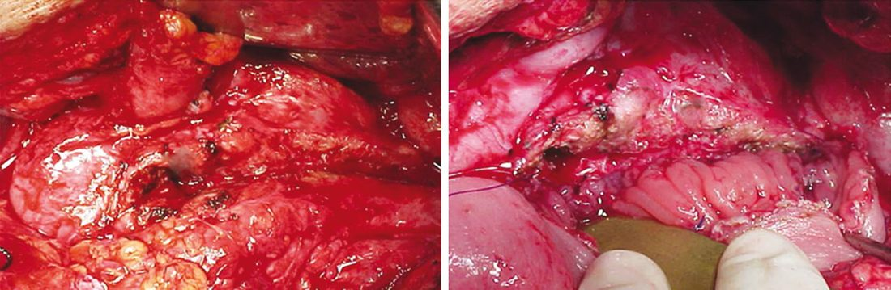

Chronic Pancreatitis
Summary
- Chronic pancreatitis is characterised by persistent inflammation and irreversible fibrosis with atrophy of the pancreatic parenchyma, producing chronic pain and progressive exocrine and endocrine insufficiency [1].
- It affects 5–8 per 100,000 adults, is more common in men, and carries a higher risk among Black patients than White patients [1].
- Alcohol is the leading cause in the Western world [1][2].
- Management progresses from lifestyle modification and enzyme replacement through endoscopic therapy to surgical drainage or resection depending on ductal anatomy and the presence of a dominant inflammatory mass [1].
Definition
Chronic pancreatitis is a chronic inflammatory condition of the pancreas resulting in irreversible destruction of the pancreatic secretory parenchyma and progressive fibrosis, in contrast to the acute, largely reversible inflammation of acute pancreatitis [1][2].
Pathophysiology
- Pain results from a combination of ductal obstruction/hypertension (from strictures or stones), parenchymal disease, and obstructive pancreatopathy, with retroperitoneal inflammation causing persistent neural involvement [2][3].
- Pancreatic stellate cells (PSCs), specialised quiescent fibroblasts at the base of acinar cells, are central to fibrogenesis: once activated by chronic necroinflammation, PSCs differentiate into myofibroblasts that synthesise collagen I and III, fibronectin, laminin and matrix metalloproteinases, driving progressive fibrosis [1].
- Alcohol increases protein concentration in pancreatic juice and promotes lithostathine and glycoprotein 2 secretion, leading to protein plug and stone formation within the duct, obstruction, and predisposition to acinar autodigestion; alcohol metabolites (fatty acid ethyl esters, reactive oxygen species, acetaldehyde) also directly injure acinar organelles [1].
- Genetic contributors include mutations in PRSS1 (cationic trypsinogen, hereditary pancreatitis), SPINK1 (a trypsinogen-activation inhibitor), and CFTR (impairing bicarbonate/chloride secretion and concentrating pancreatic enzymes within the duct) [1][2].
Clinical features
- Pain is the primary manifestation, initially precipitated by oral intake, increasing in intensity, frequency and duration as disease progresses, though 5–10% of patients remain pain-free [1][2].
- Nausea, vomiting, anorexia and weight loss occur, particularly as disease advances [2].
- Exocrine insufficiency requires at least 90% loss of functioning gland before manifesting as steatorrhoea (soft, greasy, foul-smelling, floating stools), diarrhoea and malabsorption, occurring in 80–90% of patients with long-standing disease; protein malabsorption contributes to anorexia and weight loss, and fat-soluble vitamin deficiency can cause bleeding tendencies, osteopenia and osteoporosis [1][2].
- Endocrine insufficiency, from loss of β-islet cells, produces abnormal glucose tolerance in two-thirds of patients and overt (type 3c) diabetes in 30–80% depending on disease duration [1][2].
- Jaundice or cholangitis occurs in 5–10% of patients from fibrotic compression of the distal common bile duct, and duodenal obstruction from scarring of the pancreatic head can cause severe nausea and vomiting [1].
Etiology
- Alcohol is the most common cause, accounting for 60–80% of cases [1][2], though only 3–7% of heavy drinkers actually develop chronic pancreatitis, implying other cofactors are required [1].
- Idiopathic and genetic causes together comprise more than half of cases when considered together, with idiopathic disease alone accounting for up to 20–30% [1][3].
- Other causes include ductal obstruction (trauma, pancreas divisum, peri-ampullary tumours, post-ERCP stricture), metabolic disorders (hypercalcaemia, hypertriglyceridaemia), hereditary pancreatitis (PRSS1, CFTR mutations), autoimmune pancreatitis (usually IgG4-associated), and tropical pancreatitis (associated with cassava ingestion and SPINK1 mutations in equatorial regions, particularly India) [1][2].
- Smoking increases the risk of alcohol-induced chronic pancreatitis and independently accelerates disease onset, pancreatic calcification and diabetes [1].
Autoimmune pancreatitis has two histologic variants: type 1 (IgG4-related, with dense periductal lymphoplasmacytic infiltrate, storiform fibrosis and obliterative venulitis) and type 2 (pancreas-specific, neutrophilic, not IgG4-associated); type 1 predominates and typically presents with a "sausage-shaped" pancreas on imaging that can mimic pancreatic adenocarcinoma [1].
Diagnosis
- Serum amylase is usually normal in chronic pancreatitis [2].
- Cross-sectional imaging is central: CT findings include a dilated pancreatic duct (68%), parenchymal atrophy (54%) and pancreatic calcifications (50%), with sensitivity 56–95% and specificity 85–100% [1].
- Plain abdominal radiography may show pancreatic calcification [2].
- MRI/MRCP, particularly with secretin stimulation, is useful for evaluating ductal strictures and pancreatic duct disruption [1][2].
- ERCP, historically the diagnostic gold standard, is now reserved for cases where other imaging is contraindicated or inconclusive, or for therapeutic intervention on strictures, stones, or pseudocysts [1].
- Endoscopic ultrasound (EUS) is the most accurate technique for diagnosing early or minimal-change disease, using the Rosemont criteria, which combine major parenchymal features (hyperechoic foci with shadowing; honeycombing lobularity), minor parenchymal features, major ductal features (main duct calculi), and minor ductal features to categorise findings as consistent with, suggestive of, indeterminate for, or normal for chronic pancreatitis [1][3].
- Even a "normal" Rosemont classification has a poor negative predictive value, with up to 55% of such cases ultimately proving to have chronic pancreatitis histologically [1].
- Functional testing includes faecal elastase-1 (>200 μg/g normal, 100–200 μg/g mild-to-moderate insufficiency, <100 μg/g severe insufficiency) and the 72-hour faecal fat test (>7 g/day defines steatorrhoea) [1].

Scoring and Severity
The Rosemont EUS classification (above) functions as the principal diagnostic/severity framework, stratifying findings into "consistent with," "suggestive of," "indeterminate for," and "normal" for chronic pancreatitis based on combinations of major and minor parenchymal and ductal criteria [1]. Surgical decision-making is further stratified by pancreatic duct calibre: a main pancreatic duct ≥7 mm defines "large duct disease," suitable for a decompressive (drainage) procedure, while a non-dilated duct defines "small duct disease," generally requiring a resectional procedure [1].
Treatment and Management
- Medical management centres on cessation of alcohol and smoking, treatment of predisposing metabolic factors (e.g. hypertriglyceridaemia), and a low-fat diet, since disease progression can be slowed but not reversed [1][2].
- Pain management follows a stepwise approach: NSAIDs first-line, then tramadol, then potent long-acting narcotics for severe pain, with adjuncts (tricyclic antidepressants, SSRIs, SNRIs, gabapentin) considered and multidisciplinary pain-team involvement recommended given addiction risk [1].
- The ESCAPE trial and earlier randomised trials found early surgical ductal drainage superior to an endoscopy-first approach for pain relief, with fewer reinterventions [1].
- Pancreatic exocrine insufficiency is treated with pancreatic enzyme replacement therapy (e.g.
- Creon/pancrelipase), generally around 90,000 USP units of lipase per day divided across meals, given with proton pump inhibitors to improve efficacy of uncoated enzymes [1][2].
- Endocrine insufficiency (type 3c diabetes) requires management by an endocrinologist experienced with the higher risk of severe hypoglycaemia in this population [1].
- Endoscopic therapy (ERCP with duct dilation and stenting, stone extraction, sometimes preceded by extracorporeal shock wave lithotripsy) is used for symptomatic ductal obstruction, biliary obstruction (with plastic stenting for cholangitis or malnutrition), and pseudocyst drainage, malignancy must first be excluded, particularly for a pancreatic duct stricture [1].
Surgeries
Surgical intervention is indicated for intractable pain, biliary or pancreatic duct obstruction, duodenal obstruction, pseudocyst/pseudoaneurysm formation, or inability to exclude malignancy [1]. Choice of operation depends on ductal calibre and the presence of a dominant inflammatory mass.
For large duct disease (duct ≥7 mm) from stones or strictures, the side-to-side Roux-en-Y pancreaticojejunostomy (modified Puestow / lateral pancreaticojejunostomy) is standard: the anterior pancreatic duct is unroofed from tail to near the ampulla, stones extracted, and a Roux limb anastomosed laterally; this preserves parenchyma and relieves pain in about 80% of cases, though 30% recur (usually 3–5 years later) [1][2]. The original Duval procedure combined distal pancreatectomy, splenectomy and end-to-side pancreaticojejunostomy, and the Puestow–Gillesby procedure added a longitudinal element with distal resection [2].
For an enlarged pancreatic head (≥5 cm) with severe inflammation precluding safe pancreaticoduodenectomy, the Frey procedure combines local coring-out ("excavation") of the pancreatic head with a longitudinal pancreaticojejunostomy, leaving a 1-cm rim of tissue along the duodenal margin; this achieves complete or satisfactory pain control in about 95% of patients, though roughly one-third develop endocrine or exocrine insufficiency [1][2]. The Beger procedure (duodenum-preserving pancreatic head resection) removes the pancreatic head while preserving duodenal continuity, with reconstruction via a Roux limb anastomosed to the pancreatic remnant; randomised trials show pain relief equivalent to pancreaticoduodenectomy and the Frey procedure [1][2].
- For a single stricture proximal to the papilla, or a focal inflammatory mass without significant ductal dilation, pancreaticoduodenectomy (Whipple procedure) or pylorus-preserving pancreaticoduodenectomy may be used, contraindicated if more than one obstruction is present in the duct [1][2].
- For diffuse glandular involvement without ductal dilation ("small duct disease"), total pancreatectomy provides the most durable pain relief but invariably causes diabetes; islet autotransplantation at the time of total pancreatectomy can reduce this burden, with roughly one-third of patients achieving insulin independence, another third requiring intermittent insulin, and the remainder fully insulin-dependent, while 90% experience pain relief or reduction [1].
- Total pancreatectomy is reserved as a salvage operation given the resultant "brittle" diabetes [2].
- Surgical pain-control adjuncts include splanchnicectomy (EUS-guided or thoracoscopic) and radiofrequency ablation, though celiac neurolysis has not shown sustained benefit in chronic pancreatitis [1][2].
- Biliary strictures from chronic pancreatitis are treated with temporary plastic stenting for cholangitis, Roux-en-Y hepaticojejunostomy where malignancy is excluded and significant scarring precludes head resection, or definitively by pancreaticoduodenectomy when malignancy cannot be excluded; a Frey or Beger procedure can also relieve biliary obstruction by removing the compressive head parenchyma [1].
- Duodenal stenosis (in up to 1.2% of patients) is treated with gastrojejunostomy after nutritional optimisation [1].
- Symptomatic pancreatic pseudocysts (developing in 30–40% of chronic pancreatitis patients, with only 10% resolving spontaneously given persistent ductal obstruction) are managed by endoscopic (EUS-guided) or surgical (cystogastrostomy, cystojejunostomy) drainage [1].



Complications
- Recognised complications include pseudocyst formation, biliary duct obstruction, gastric outlet or duodenal obstruction, and gastrointestinal bleeding secondary to pseudoaneurysm formation or variceal bleeding from splenic vein thrombosis (occasionally requiring splenectomy) [2].
- Long-term exocrine and endocrine pancreatic insufficiency are near-universal in advanced disease [1].
- Patients with chronic pancreatitis carry an estimated 4% lifetime risk of developing pancreatic cancer [2], and any focal mass arising in a background of chronic pancreatitis should be regarded with suspicion and biopsied before treatment [1].
Prognosis
- Chronic pancreatitis is a progressive, irreversible disease; while cessation of the causative agent (alcohol, smoking) can slow progression, established fibrosis does not reverse [1].
- Decompressive surgery for large-duct disease provides durable pain relief in the majority of patients, though roughly 30% experience recurrence within 3–5 years [1].
- Groups managing severe diffuse disease have found that patients with depression or ongoing substance abuse have a poorer overall outcome, underscoring the value of multidisciplinary management incorporating pain specialists and psychiatric support [1].
References
- Sabiston Textbook of Surgery, 22nd ed., Ch. 92
- Oxford Handbook of Clinical Surgery, 5th ed., Ch. 9, as the **Partington–Rochelle** modification without distal pancreatectomy
- Schwartz's Principles of Surgery: ABSITE and Board Review, Ch. 33
- Maingot's Abdominal Operations, 13th ed., Ch. 71